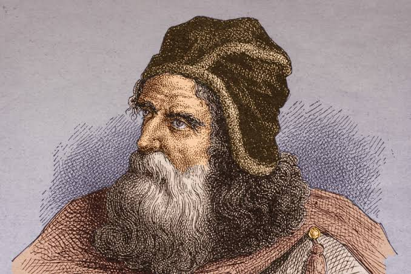
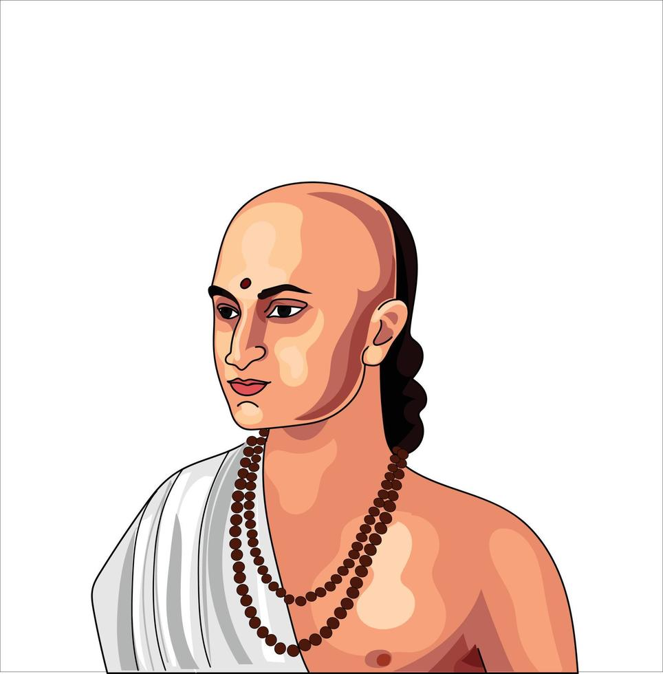
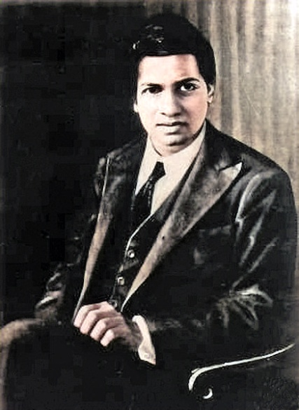

Nikola Tesla
Born: July 10, 1856, Smiljan, Austrian Empire (now Croatia)
Died: January 7, 1943, New York City
Notable Invention: Nikola Tesla revolutionized electrical engineering with his development of the alternating current (AC) system, the Tesla Coil, and the induction motor. His pioneering work on wireless energy, radio waves, and X-rays cemented his legacy as one of history’s most visionary inventors.

Leonardo da Vinci
Born: April 15, 1452, Vinci, Duchy of Florence (now Italy)
Died: May 2, 1519, Amboise, Kingdom of France
Notable Invention: Leonardo da Vinci, a Renaissance polymath, made groundbreaking contributions to science, engineering, and art. His visionary designs included flying machines like the ornithopter and helical air screw, as well as war machines like the armored tank. His genius in mechanics and creativity continues to inspire innovation across various fields.


Alexander Graham Bell
Born: March 3, 1847, Edinburgh, Scotland
Died: August 2, 1922, Baddeck, Nova Scotia, Canada
Notable Invention: Alexander Graham Bell, best known for inventing the telephone, revolutionized communication by creating the first device to transmit speech electrically. His work also advanced hearing technologies, including early hearing aids, and he contributed to aviation and hydrofoil design, highlighting his broad influence on technological innovation.


Marie Curie
Born: November 7, 1867, Warsaw, Poland (then part of the Russian Empire)
Died: July 4, 1934, Passy, Haute-Savoie, France
Notable Invention: Marie Curie, a pioneering physicist and chemist, is famous for discovering the elements polonium and radium, advancing atomic physics. She also invented portable X-ray machines during World War I, revolutionizing medical imaging. Curie won two Nobel Prizes, in Physics and Chemistry, making her the first woman to win a Nobel and the only person to win in two scientific fields.


Albert Einstein
Born: March 14, 1879, Ulm, Kingdom of Württemberg, German Empire
Died: April 18, 1955, Princeton, New Jersey, USA
Notable Invention: Albert Einstein revolutionized physics with his theory of relativity and contributed to the development of quantum mechanics through his work on the photoelectric effect. He also co-invented a non-electric refrigerator in 1926.

Charles Babbage
Born: December 26, 1791, Teignmouth, Devon, England
Died: October 18, 1871, London, England
Notable Invention: Charles Babbage is known as the "father of the computer" for designing the analytical engine, a mechanical precursor to the modern computer. He also developed the difference engine, which was designed to perform mathematical calculations automatically. Babbage’s visionary concepts laid the groundwork for the future development of computers.


George Washington Carver
Born: c. 1864, Diamond, Missouri, USA
Died: January 5, 1943, Tuskegee, Alabama, USA
Notable Invention: George Washington Carver revolutionized agricultural science by popularizing crop rotation and advocating for soil health. He developed over 300 products from peanuts, including peanut oil and cosmetics, and hundreds more from sweet potatoes, showcasing his ingenuity in utilizing natural resources.


Galileo Galilei
Born: February 15, 1564, Pisa, Duchy of Florence, Italy
Died: January 8, 1642, Arcetri, Grand Duchy of Tuscany, Italy
Notable Invention: Galileo Galilei, a pioneering astronomer and physicist, made groundbreaking contributions to science with his improvements to the telescope and his discoveries of Jupiter’s moons, phases of Venus, and sunspots. His support of the heliocentric model of the solar system helped shift scientific thought, laying the foundation for modern physics and astronomy.


Antonie van Leeuwenhoek
Born: October 24, 1632, Delft, Dutch Republic
Died: August 26, 1723, Delft, Dutch Republic
Notable Invention: Antonie van Leeuwenhoek is known as the "father of microbiology" for his pioneering work in developing the microscope and discovering microorganisms. His detailed observations of bacteria, protozoa, and sperm cells, made using his handcrafted microscopes, opened the door to the field of microbiology and revolutionized our understanding of the microscopic world.


Archimedes
Born: c. 287 BCE, Syracuse, Sicily, Magna Graecia
Died: c. 212 BCE, Syracuse, Sicily, Roman Republic
Notable Invention: Archimedes, one of the greatest mathematicians and engineers of ancient Greece, made groundbreaking contributions in geometry, physics, and engineering. He formulated the principle of buoyancy, known as Archimedes' Principle, and designed innovative machines, including the Archimedean screw for raising water. His work laid the foundation for modern calculus and mechanics.


Aryabhata
Born: 476 CE, Kusumapura (modern-day Patna, India)
Died: c. 550 CE, location unknown
Notable Invention: Aryabhata, an ancient Indian mathematician and astronomer, made significant contributions to algebra, trigonometry, and the understanding of the solar system. He was the first to propose that the Earth rotates on its axis and explained the causes of eclipses. Aryabhata also calculated the value of pi (π) with remarkable accuracy and developed methods for solving quadratic equations, influencing mathematics for centuries.


C.V.Raman
Born: November 7, 1888, Tiruchirapalli, Tamil Nadu, India
Died: November 21, 1970, Bangalore, Karnataka, India
Notable Invention: C.V. Raman, an Indian physicist, is best known for discovering the Raman Effect, which explained how light scatters when passing through different mediums. This groundbreaking discovery earned him the Nobel Prize in Physics in 1930. Raman's work in optics and light scattering significantly advanced the field of physics and led to important developments in material science and spectroscopy.


Srinivasa Ramanujan
Born: December 22, 1887, Erode, Tamil Nadu, India
Died: April 26, 1920, Kumbakonam, Tamil Nadu, India
Notable Invention: Srinivasa Ramanujan, an Indian mathematician, made extraordinary contributions to number theory, infinite series, and continued fractions. Despite limited formal training, his work on highly complex mathematical concepts, such as the Ramanujan Prime and the Ramanujan-Hardy Number, revolutionized mathematics. His groundbreaking discoveries continue to influence modern mathematics, particularly in areas like partition theory and modular forms.


Martin Cooper
Born: December 26, 1928, Chicago, Illinois, USA
Notable Invention: Martin Cooper, an American engineer, is credited with inventing the first practical mobile phone. In 1973, he made the first publicized mobile phone call while working for Motorola, leading to the development of the modern cellular phone. Cooper’s innovations in wireless communication laid the foundation for the mobile technology that has since transformed global communication.


Tim Berners-Lee
Born: June 8, 1955, London, England
Notable Invention: Tim Berners-Lee, a British computer scientist, is best known for inventing the World Wide Web in 1989. He developed the fundamental technologies of the web, including HTML, HTTP, and URLs, which revolutionized the way information is shared and accessed globally. Berners-Lee's work has had a profound impact on communication, business, education, and society.


Richard Trevithick
Born: April 13, 1771, Illogan, Cornwall, England
Died: April 22, 1833, Dartford, Kent, England
Notable Invention: Richard Trevithick, a British engineer, is best known for inventing the steam locomotive. In 1804, he successfully demonstrated the first full-scale working railway locomotive, the Penydarren locomotive, which paved the way for the development of steam-powered trains. Trevithick's innovations in steam engine technology were crucial in the evolution of rail transport during the Industrial Revolution.


Carl Benz
Born: November 25, 1844, Mühlburg, Karlsruhe, Germany
Died: April 4, 1929, Ladenburg, Germany
Notable Invention: Carl Benz, a German engineer, is credited with inventing the first practical automobile powered by an internal combustion engine. In 1885, he built the Benz Patent-Motorwagen, which became the first commercially available car. Benz's innovation laid the foundation for the modern automotive industry, revolutionizing transportation and mobility worldwide.


Grace Hopper
Born: December 9, 1906, New York City, USA
Died: January 1, 1992, Arlington, Virginia, USA
Notable Invention: Grace Hopper, an American computer scientist and Navy rear admiral, was a pioneer in the development of computer programming. She is best known for creating the first compiler, which translated human-readable code into machine code, and for her role in developing the COBOL programming language. Hopper's work greatly advanced software development and is fundamental to modern computing.


Alan Turing
Born: June 23, 1912, Maida Vale, London, England
Died: June 7, 1954, Wilmslow, Cheshire, England
Notable Invention: Alan Turing, a British mathematician and computer scientist, is considered the father of modern computing. He developed the Turing machine, a theoretical model that became the foundation for computer science. Turing played a key role in breaking the Enigma code during World War II, significantly aiding the Allied victory. His work on artificial intelligence and algorithms laid the groundwork for the development of modern computing and cognitive science.


Michael Faraday
Born: September 22, 1791, Newington Butts, Surrey, England
Died: August 25, 1867, Hampton Court, Middlesex, England
Notable Invention: Michael Faraday, an English scientist, made groundbreaking discoveries in electromagnetism and electrochemistry. He is best known for his work in electromagnetic induction, which led to the development of the electric generator. Faraday also discovered benzene and made significant contributions to the field of electrolysis. His work laid the foundation for modern electrical engineering and chemistry.


Thomas Edison
Born: February 11, 1847, Milan, Ohio, USA
Died: October 18, 1931, West Orange, New Jersey, USA
Notable Invention: Thomas Edison is known for inventing the practical electric light bulb, the phonograph, and making significant contributions to the development of the electric power industry and the motion picture camera. His inventions and over 1,000 patents revolutionized modern technology.

Hedy Lamarr
Born: January 9, 1914, Vienna, Austria-Hungary (now Austria)
Died: January 19, 2000, Casselberry, Florida, USA
Notable Invention:Hedy Lamarr, an Austrian-American actress and inventor, co-invented frequency hopping technology, which laid the foundation for modern wireless communication systems, including Wi-Fi, Bluetooth, and GPS. Her innovation in securing radio signals during World War II was ahead of its time, and she is celebrated for her contributions to both the entertainment and technology industries.